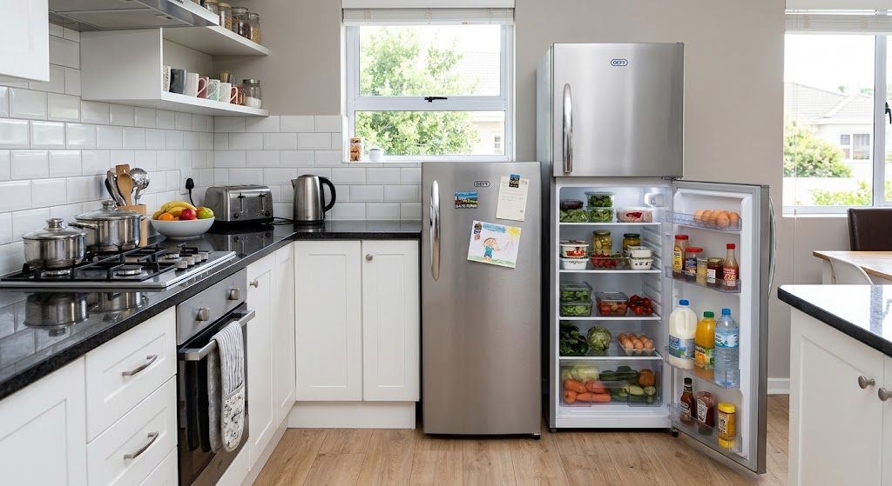
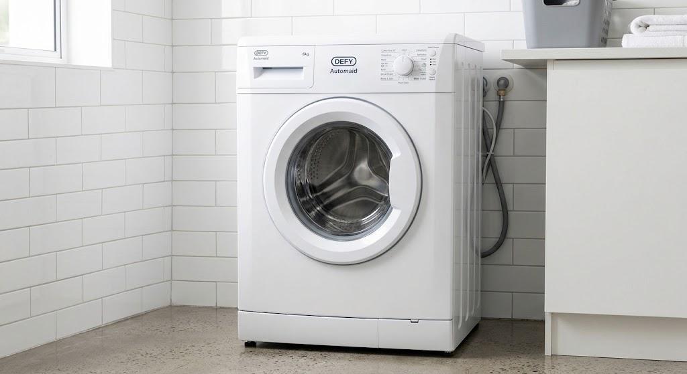
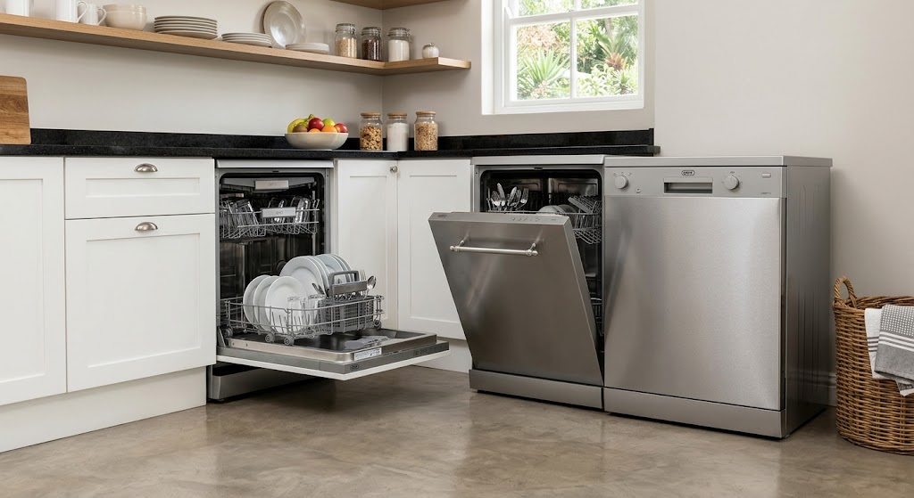
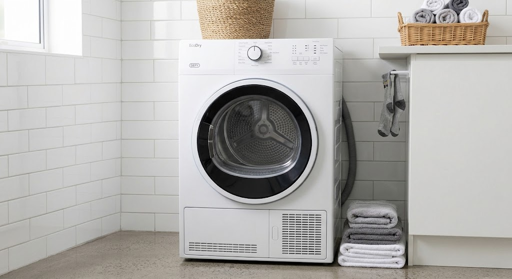

Certified Defy Appliance Repairs in Sandton, Randburg & Gauteng
Same-day technician dispatch for Defy refrigerators, Automaid washing machines, Thermofan+ ovens, stoves, and EcoDry tumble dryers. Fully stocked with genuine factory OEM spares across Sandton, Randburg, Midrand, and Rosebank.
Genuine Defy Factory Spares
100% Original South African OEM Parts
- 6-Month Written Warranty on Parts & Labor
- ProSmart Inverter & PCB Surge Specialists
- Stocked Thermostats, Elements, Pumps & Seals
- Legacy & Modern Defy Model Support
Specialized On-Site Support for South Africa's Leading Brand
As South Africa's premier household brand, Defy appliances combine Dual Cooling technology, ProSmart Inverter motors, Automaid wash cycles, and Thermofan+ convection baking. Restoring these trusted units requires deep familiarization with both modern digital electronics and classic analog mechanical systems.
Eazy Appliance Repairs provides rapid mobile technician dispatch across Sandton, Randburg, Midrand, Rosebank, and wider Gauteng. We stock 100% factory-original (OEM) Defy spare parts to protect your investment and back every repair with our 6-Month Guarantee on Parts & Labor.
Quick Defy Assessor
Select your Defy appliance category for immediate diagnostic details
Fully stocked mobile inventory for Defy Dual Cooling, NatureLight fridges, and chest freezers. Carrying original thermostats, defrost heaters, overload protectors, door seals, and ProSmart inverter modules.
Book Fix For This UnitSpecialized On-Site Defy Repairs Across Gauteng
We deliver factory-spec diagnostics and genuine replacement parts for all Defy residential appliances across Sandton, Randburg, Midrand, and Rosebank.

Dual Cooling & Chest FreezersDefy Refrigerator & Chest Freezer Repairs
Complete repair services for Defy Dual Cooling fridge-freezers, NatureLight models, and chest freezers. We resolve cooling loss, defrost system failures, noisy compressors, and load-shedding relay damage on-site.
Fridge Warm / Freezer Cold: Defrost fan motor failure or blocked air damper duct. Replaced on-site with genuine Defy spares.
Clicking Noise / Not Starting: Tripped compressor PTC starter relay due to power surges. Fitted with heavy-duty surge-resistant relays.
Frost Build-Up (E0 / E4): Burned defrost heating element or NTC sensor failure. Restored with factory-spec defrost kits.
Defy Automaid Washing Machine Repairs
On-site technical support for Defy Automaid, AquaWave, and ProSmart Inverter front and top loaders. We fix drainage timeouts, door lock errors, drum bearing grinding, and main control board short circuits.
Not Draining (E2 Error): Blocked filter trap or burned drain pump motor. Cleared or replaced on location within 45 minutes.
Door Latch Stuck (E4): Electronic door interlock solenoid burn. Swapped with 100% original Defy door switch assemblies.
Unbalanced Spin (E3): Worn tub suspension struts or out-of-balance sensor trip. Restored with factory suspension kits.

Automaid & ProSmart Inverter
CornerWash & HygieneIntenseDefy Integrated & Freestanding Dishwasher Repairs
Certified technical support for Defy CornerWash and HygieneIntense dishwashers. We resolve water inlet timeouts, unheated wash cycles, drainage pump blockages, and door latch interlock faults across Gauteng.
Water Not Heating (E3): Blown flow-through heating element or faulty NTC temperature sensor. Replaced on-site with genuine Defy spare parts.
Drain Pump Blockage (E2): Foreign object in the pump impeller or burned drain pump motor. Cleared or replaced on location.
Water Supply Timeout (E1): Restricted inlet mesh filter or faulty solenoid fill valve. Fixed using original factory components.
Defy EcoDry Tumble Dryer Repairs
Specialized technician support for Defy EcoDry auto-dry and heat pump tumble dryers. We resolve heating cuts, thermal safety trips, snapped drive belts, and squeaking drum roller bearings.
Drum Turning, No Heat: Tripped high-limit safety thermostat or open heating element. Tested and replaced in under an hour.
Drum Not Rotating: Snapped poly-V drive belt or worn capacitor. Repaired on-site with original Defy belt kits.
Loud Squeaking / Screeching: Worn rear felt seal or dry drum support rollers. Lubricated or swapped with original replacement spares.

EcoDry & Auto-Dry UnitsProSmart Inverter & Power Surge PCB Diagnostics On-Site
Defy's modern ProSmart Inverter washing machines and electronic control boards require specialized diagnostic tools to calibrate motor frequencies and repair voltage fluctuations caused by South African grid load shedding.
Genuine Defy Factory OEM Spares
Certified South African factory components engineered for local grid conditions
-
Backed by 6-Month Written Warranty Complete peace of mind covering both fitted original parts and technical labor.
-
ProSmart Inverter Calibration Precise frequency alignment ensures whisper-quiet drum rotation and maximum energy efficiency.
-
Surge-Protected Control Boards Original microprocessors equipped with voltage regulation to withstand grid instability.
The Risk of Generic Knockoffs
Why imitation spare parts lead to premature electrical failures
-
Persistent E1 & E2 False Errors Uncertified sensors trigger water fill timeouts and drainage pump lockouts.
-
Main PCB Board Short Circuits Mismatched electrical resistance can fry expensive Defy electronic control displays.
-
Low Surge Resistance Imitation relays lack the heavy-duty fusing required during load shedding power returns.
Defy Appliance Error Code & Fault Diagnostic Guide
Is your Defy washing machine, fridge, or oven flashing an error code or experiencing a breakdown? Use our instant lookup tool to identify the issue and recommended technician fix.
| Appliance | Error / Code | Diagnosed Issue | Recommended Technician Fix | Action |
|---|---|---|---|---|
| Washer | E1 |
Water Inlet Timeout / Low Supply Pressure | Clean inlet valve mesh filters, check home water tap pressure, replace water inlet solenoid valve. | Book Fix |
| Washer | E2 |
Drainage Obstruction / Pump Timeout | Clear coin trap filter debris, inspect drain hose for kinks, replace worn drain pump motor. | Book Fix |
| Washer | E3 |
Unbalanced Wash Load Detected | Rearrange wash load, check outer tub suspension springs, test out-of-balance sensor switch. | Book Fix |
| Washer | E4 |
Door Interlock Latch Failure | Inspect door strike alignment, test electronic door lock solenoid, replace latch unit. | Book Fix |
| Fridge | E0 / E4 |
NTC Temperature Sensor or Defrost Fault | Test thermistor resistance, replace burned defrost heating element, reset PCB control board. | Book Fix |
| Fridge | Clicking |
Compressor PTC Relay / Overload Tripped | Test compressor winding resistance, replace burned starter relay with surge-resistant unit. | Book Fix |
| Oven | Tripping |
Earth Leakage Fault in Bake/Fan Element | Test element insulation resistance with multimeter, replace shorted circular Thermofan element. | Book Fix |
| Oven | No Heat |
Blown Element or Selector Switch Failure | Test function selector switch contacts, swap burned bake or Thermofan heating element. | Book Fix |
| Dryer | No Heat |
Tripped High-Limit Thermal Cut-Out Fuse | Clean lint filter ducting completely, replace tripped thermal fuse and heating coil. | Book Fix |
Same-Day Defy Mobile Service Vans Across Gauteng
Our mobile units travel daily through Sandton, Randburg, Midrand, Rosebank, and surrounding areas fully stocked with original Defy factory OEM spare parts.
Defy Primary Mobile Hubs
Technicians on standby in your area for fast on-site dispatch:
Check Defy Mobile Van Status
Select your suburb and appliance type for immediate dispatch status
Need Urgent Defy Appliance Repair in Gauteng?
Connect directly with our Defy technical desk or request a priority callback. Our mobile vans operate daily across Sandton, Randburg, Midrand, and Rosebank stocked with genuine factory OEM spare parts, including Thermofan+ heating elements, PTC starter relays, Automaid drain pumps, and ProSmart inverter PCBs.
- 6-Month Written Warranty on Parts & Labor
- 100% Factory OEM Defy Spare Parts
- Upfront Fixed Quotations — No Hidden Fees
Request a Defy Repair Callback
Submit your details for a priority technician callback within 15 minutes.
Frequently Asked Defy Repair Questions
Everything you need to know about our specialized Defy support, factory-original (OEM) spare parts, and mobile technician dispatch across Sandton, Randburg, Midrand, Rosebank, and wider Gauteng.
Yes. We exclusively fit 100% factory-original Defy replacement parts sourced directly from authorized South African brand distributors. From Thermofan+ circular elements and Automaid drain pumps to PTC compressor starter relays and ProSmart inverter modules, we never fit generic knockoffs.
Yes. Voltage spikes when electricity returns after load shedding frequently damage Defy main PCB control boards and compressor relays. Our technicians perform on-site electrical diagnostic testing, replace blown fuses and relays, or install surge-protected replacement control boards.
Oven tripping is almost always caused by an earth-leakage fault in the bake or circular Thermofan heating element due to insulation breakdown over time. Our technicians carry genuine Defy heating elements in our mobile vans and can test and replace them in under 45 minutes.
Our mobile service vans travel daily across major Gauteng hubs, enabling same-day emergency technician dispatch with typical arrival times of under 60 minutes depending on your suburb.
Yes. Our technician conducts an initial physical diagnosis on-site and provides a fixed, itemized written quotation before starting any repair work. Every completed repair is backed by our written 6-Month Warranty on parts and labor.